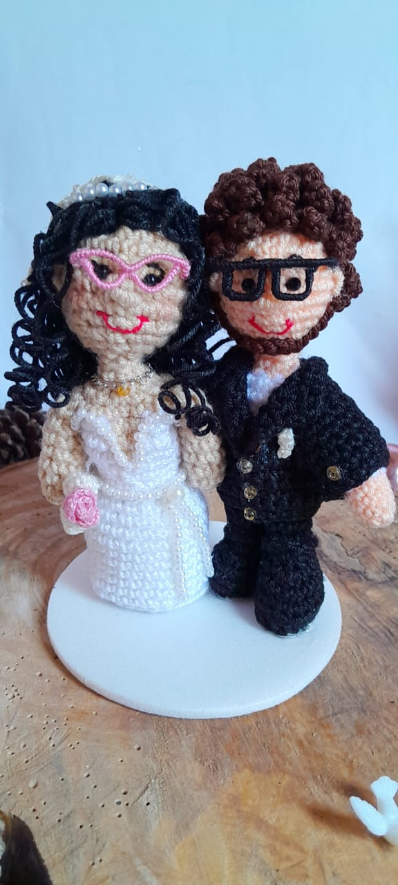
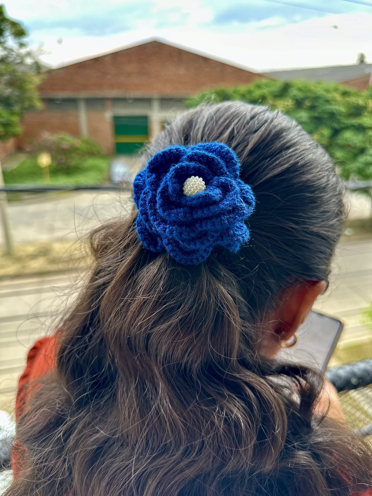
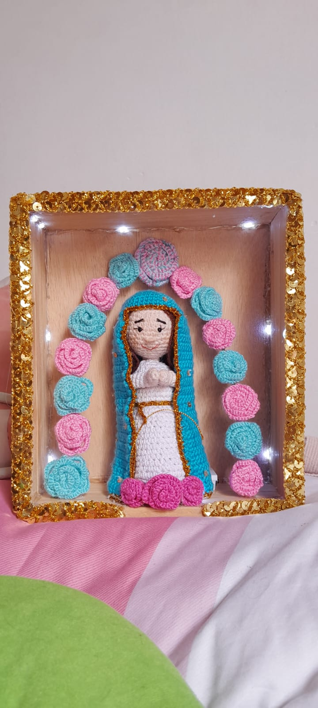

Ramos de flores tejidas
Flores que nunca se marchitan, en los colores que ames. Ideales para regalar.
Cotizar por WhatsApp →Tejidos a crochet, amigurumis y accesorios creados desde cero, con vida, creatividad y un detalle artesanal pensado solo para ti.

Explora las piezas disponibles en stock y agrégalas a tu carrito. ¿Buscas algo distinto? También tejemos bajo encargo.
¿Quieres regalar algo que nadie más tenga? Creamos amigurumis, ramos de flores eternas, bolsos, blusas y recuerdos tejidos a tu gusto: elige el personaje, los colores y ese detalle especial que lo hace tuyo.
Cuéntanos tu idea y la hacemos realidad ✨
Piezas más grandes que hacemos especialmente para ti. Escríbenos para cotizar la tuya.
Flores que nunca se marchitan, en los colores que ames. Ideales para regalar.
Cotizar por WhatsApp →Bolsos con figuras y diseños propios, resistentes y con muchísimo estilo.
Cotizar por WhatsApp →Prendas a tu medida, tejidas punto a punto para que sean únicas como tú.
Cotizar por WhatsApp →
Desde una flor en el cabello hasta el amigurumi de tu personaje favorito. Cada pieza está pensada para durar y para hacerte sonreír cada vez que la usas.
Explorar el catálogoUna muestra del cariño con el que tejemos cada pieza.

Todo empezó con las manos de una abuela enseñando a tejer: primero bolsos sencillos, tejidos básicos, sin figuras. Un aprendizaje pausado, hecho de paciencia y compañía.
Cuando su abuela partió, ella no soltó la aguja. Tejer se volvió su manera de entretenerse y de mantener viva esa enseñanza. Pero vio que podía ir más allá: con tutoriales aprendió a crear bolsos con figuras, a diseñar sus propias formas y a darles vida de otra manera.
Así siguió escalando, hasta llegar a los amigurumis. Y de todo ese camino nació Tejuncho: la idea de que cada producto tenga vida, creatividad, amor y un detalle artesanal personalizado, capaz de contar y acompañar historias.
Escríbenos directo, sin intermediarios. Nos encanta ayudarte a elegir.